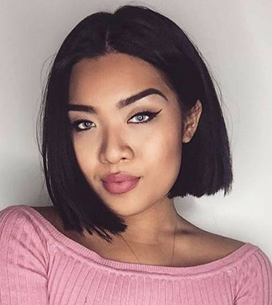
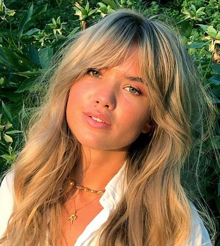
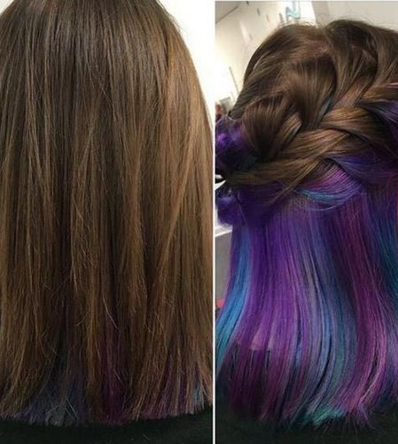

|  | Bobs Shorter hair lengths are becoming increasingly popular. Short hair is free and super chic. The style is divided into two types: blunt and squared off and loose and breezy. Anyone can pull off the bob with the right styling. Make sure to determine your face shape and think about your neck. If you have a longer neck, you have a choice about your bob length. If your neck is shorter, keep the cut at jaw-length or higher. Take the leap and chop your hair! |
|  | Curtain Bangs The 70's are back! *Cue fun disco music* If you're interested in getting bangs, but are worried about the length and the upkeep, curtain bangs might be right for you. They are super cute and can change your entire look, and if you keep them long enough, they can still be tucked behind the ear. This look is much easier to maintain than other styles of bangs, too. They grow out very nicely and should require little work. If you would rather have shorter curtain bangs/fringe, as seen on the picture to the left, use a straightener to create that little bit of flip at the ends. |
|  | Hidden Color If you're looking to try something fun and bold, this one's for you. When your hair is down, it looks totally normal, but when you put it up, there's a surprise. Get creative and make your hair pink, blue, green, or even rainbow. The limit is endless! |